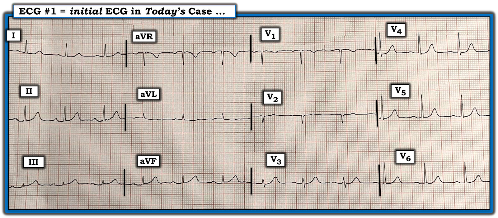
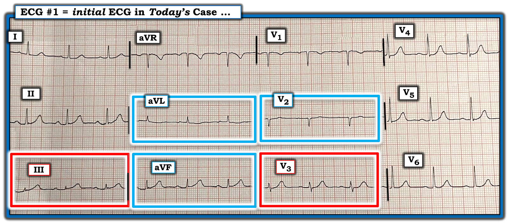

ECG Blog #426 — Có đạt tiêu chuẩn STEMI không?
Điện tâm đồ ở Hình 1 — được ghi ở một người đàn ông khoảng 70 tuổi bị CP (đau ngực – Chest Pain) từng cơn trong 2-3 ngày trước đó, nay bị đánh thức khỏi giấc ngủ vì một cơn CP dữ dội hơn.
CÂU HỎI:
- Với bệnh sử này — BẠN sẽ đọc điện tâm đồ này như thế nào?
- Có nên kích hoạt phòng thông tim (cath lab)?


SUY NGHĨ Ban đầu CỦA TÔI về CA BỆNH Hôm nay:
Dù với bệnh sử ngắn gọn được cung cấp, thật khó xác định thời điểm khởi phát thực sự của bất cứ điều gì đang xảy ra — tuổi của bệnh nhân, cùng tính dai dẳng và mức độ nặng của CP rõ ràng là những lý do đáng lo ngại.
- (Những) chuyển đạo nào ngay lập tức "lọt vào mắt BẠN"?
TRẢ LỜI:
Sóng ST-T ở 5 chuyển đạo ngay lập tức thu hút sự chú ý của tôi. Tôi đã đánh dấu các chuyển đạo này trong Hình 2 bằng hình chữ nhật ĐỎ và XANH LAM.
- VÌ SAO các chuyển đạo này thu hút sự chú ý của tôi?


Các chuyển đạo Bất thường Nhất trong Hình 1:
Khi đánh giá một bệnh nhân có thể bị OMI cấp — tôi thích bắt đầu với những chuyển đạo mà tôi biết chắc chắn là bất thường.
- ĐIỂM THEN CHỐT (PEARL) #1: Nếu khi đánh giá một bệnh nhân có CP mới xuất hiện — bạn thấy 1 hoặc 2 chuyển đạo mà bạn biết sóng ST-T chắc chắn bất thường — thì việc nhận ra những thay đổi tinh tế hơn ở các chuyển đạo lân cận ủng hộ nhận định về một biến cố cấp đang diễn tiến sẽ trở nên dễ hơn nhiều.
Áp dụng PEARL #1 vào CA BỆNH Hôm nay:
Điện tâm đồ ban đầu của ca hôm nay cho thấy nhịp xoang tần số ~80/phút — các khoảng bình thường (PR-QRS-QTc) — trục bình thường — và không lớn buồng tim. Dù có phức bộ QS ở V1,V2 — điều này không nhất thiết là bất thường, và tăng tiến sóng R phù hợp (với vùng chuyển tiếp, nơi sóng R trở nên cao hơn độ sâu sóng S — xảy ra bình thường, ở đây giữa V2 và V3).
- Chuyển đạo III và chuyển đạo V3 (trong các hình chữ nhật ĐỎ ở Hình 2) — là 2 chuyển đạo trong điện tâm đồ #1 mà tôi hoàn toàn biết chắc là bất thường.
- Phức bộ QRS ở chuyển đạo III rất nhỏ (tức là sóng R ở III cao tối đa 2 mm). Và, dù sóng T ở chuyển đạo này không “cao” xét theo chiều cao tuyệt đối — sóng T ở III rõ ràng không tương xứng về kích thước so với phức bộ QRS của nó (tức là sóng T ở III cao gần gấp đôi sóng R ở chuyển đạo này — và sóng T này “đầy đặn hơn” ở đỉnh và rộng hơn nhiều ở đáy so với mức lẽ ra phải có, xét theo kích thước QRS ở III).
- Một khi nhận ra ở bệnh nhân có CP mới xuất hiện này rằng sóng ST-T ở chuyển đạo III rõ ràng là tối cấp — sẽ DỄ HƠN nhiều để nhận ra rằng sóng T ở chuyển đạo lân cận aVF cũng cao hơn một cách không tương xứng và “đầy đặn hơn” ở đỉnh so với mức lẽ ra phải có, xét theo chiều cao khiêm tốn của sóng R ở aVF.
- ĐIỂM THEN CHỐT (PEARL) #2: Điều quan trọng là theo các nguyên tắc trên — dù nếu đứng riêng, tôi không nhất thiết đọc sóng ST-T ở chuyển đạo II lân cận là “bất thường” — nhưng trong bối cảnh CP mới xuất hiện, khi chúng ta vừa xác định sóng T tối cấp ở 2 chuyển đạo dưới còn lại ( = III và aVF) — Chẳng phải sóng T ở chuyển đạo dưới thứ 3 này ( = chuyển đạo II) cũng trông “đầy đặn hơn” ở đỉnh và rộng hơn ở đáy so với mức lẽ ra phải có sao, nhất là khi biên độ sóng R ở chuyển đạo này khá khiêm tốn?
- ĐIỂM THEN CHỐT (PEARL) #3: Theo kinh nghiệm của tôi, cách DỄ NHẤT để tự thuyết phục rằng thay đổi ST-T ở III và/hoặc aVF là cấp tính — là TÌM mối quan hệ đối nghịch soi gương “kỳ diệu” hầu như luôn luôn tồn tại giữa sóng ST-T ở III và aVL khi có OMI thành dưới cấp (Xem ECG Blog #167 và Blog #184, cùng nhiều bài khác).
- Điểm MẤU CHỐT: Hiếm khi OMI thành dưới cấp mà không thấy thay đổi ST-T soi gương (reciprocal) ở aVL. Đây là điểm phân biệt quan trọng giữa ST chênh lên ở các chuyển đạo dưới thường gặp trong biến thể tái cực lành tính (khi đó bạn sẽ không thấy thay đổi ST-T soi gương ở aVL) — so với OMI thành dưới cấp, khi đó bạn sẽ thấy!
- Rõ ràng, trong Hình 1 — ST-T dẹt, kèm sóng T đảo ngược nông mà ta thấy ở aVL là một dấu hiệu tinh tế (trong hình chữ nhật XANH LAM ở aVL) — NHƯNG — trong bối cảnh bệnh nhân có CP mới xuất hiện và sóng T tối cấp ở các chuyển đạo dưới — tôi đọc ST dẹt kèm sóng T đảo ngược nông ở aVL là phù hợp với thay đổi soi gương.
ĐIỂM THEN CHỐT (PEARL) #4: Do nguồn cấp máu chung của RCA (động mạch vành phải – Right Coronary Artery) — và động mạch LCx (Left Circumflex – động mạch mũ trái) (tức là cả hai động mạch vành này thường cấp máu cho cả thành dưới lẫn thành sau thất trái) — nên rất thường gặp là khi thấy bằng chứng điện tâm đồ của OMI cấp ở một trong hai vùng giải phẫu này, bạn cũng sẽ thấy nó ở vùng giải phẫu còn lại (Xem ECG Blog #193 — và Blog #351, cùng nhiều bài khác).
- Áp dụng PEARL #4 này vào điện tâm đồ ban đầu của ca hôm nay — tôi hy vọng tìm thêm bằng chứng ủng hộ rằng những thay đổi ST-T tinh tế ở 4 chuyển đạo chi là thật — bằng cách tìm thêm thay đổi ST-T ở các chuyển đạo trước tim gợi ý OMI thành sau cấp hoặc mới xảy ra.
- Ở một bệnh nhân có CP mới xuất hiện — không hề có chút nghi ngờ nào rằng sóng ST-T ở chuyển đạo V3 trong Hình 2 (trong hình chữ nhật ĐỎ ở V3) là bất thường! Xét biên độ rất nhỏ của phức bộ QRS ở chuyển đạo này — sóng T ở V3 ít nhất cũng cao bằng sóng R ở V3, và sóng T này “đầy đặn hơn” ở đỉnh và rộng hơn ở đáy so với mức lẽ ra phải có, xét theo kích thước nhỏ của sóng R này.
- ĐIỂM THEN CHỐT (PEARL) #5: Bình thường — ở V2,V3 phải có ST chênh lên nhẹ với đoạn ST dốc lên thoai thoải. Vì vậy, sóng ST-T ở chuyển đạo V2 lân cận cũng bất thường — ở chỗ đoạn ST ở chuyển đạo này dẹt, không hề chênh lên (tức là trong hình chữ nhật XANH LAM ở V2).
Tổng hợp lại tất cả:
Với bệnh sử CP mới xuất hiện — điện tâm đồ ban đầu hôm nay có giá trị chẩn đoán OMI cấp ( = nhồi máu cơ tim do tắc mạch vành cấp).
- Dù chắc chắn có thể tiến hành đánh giá thêm — điểm cần nhấn mạnh là điện tâm đồ ở Hình 1, cùng với bệnh sử CP mới, dữ dội đánh thức bệnh nhân khỏi giấc ngủ — là tất cả những gì cần để biết rằng phải thông tim kịp thời kèm PCI càng sớm càng tốt.
- Không cần chờ kết quả troponin trước khi đưa bệnh nhân đi thông tim. Lý do là ngay cả khi troponin ban đầu bình thường — điều đó cũng không loại trừ được gì! (tức là hs-troponin ban đầu đôi khi có thể bình thường dù có OMI cấp). Vì vậy — không cần chờ kết quả troponin, vì kết quả này sẽ không thay đổi nhu cầu thông tim kịp thời.
- Dĩ nhiên vẫn phải ghi các điện tâm đồ liên tiếp — nhưng không cần chờ điện tâm đồ thứ 2 rồi mới đưa bệnh nhân đi thông tim — vì với bệnh sử CP mới, dữ dội và sóng ST-T tối cấp ở nhiều chuyển đạo — bất kể điện tâm đồ thứ 2 trông tốt hơn hay xấu hơn — vẫn cần thông tim kịp thời.
- Giả sử đã sắp xếp thông tim kịp thời — hầu như luôn có "một khoảnh khắc" trước khi thông tim để ghi lại điện tâm đồ, điều này sẽ hữu ích cho việc đánh giá. Nhưng điểm cần nhấn mạnh là quyết định thông tim kịp thời không cần chờ đến khi có điện tâm đồ thứ 2 đó.
- Như vẫn thường được nhấn mạnh trong ECG Blog này — tái tưới máu tự phát của động mạch "thủ phạm" là thường gặp — và, NẾU điều này xảy ra trước khi ghi điện tâm đồ thứ 2, thay đổi ST-T có thể "trông tốt hơn" (Xem Tài liệu tham khảo tới các bài Blog liên quan bên dưới). Nhưng — Cái gì tự mở ra — cũng có thể dễ dàng tự đóng lại — đó là lý do vì sao ngay cả khi điện tâm đồ thứ 2 "trông tốt hơn" — vẫn cần thông tim kịp thời kèm PCI để phòng động mạch "thủ phạm" tự tắc lại vào một thời điểm sau đó.
- Cuối cùng — ca này không nên được gọi là NSTEMI (vì thuật ngữ này sẽ ngụ ý sai rằng không có tắc mạch vành cấp — và PCI sẽ không mang lại lợi ích). Thuật ngữ "NSTEMI" đã bị lạm dụng, và thường được dùng theo kiểu "mặc định" (tức là vì không thấy tiêu chuẩn STEMI tính theo milimét trên bất kỳ điện tâm đồ nào đã ghi). Thay vào đó, từ phần bàn luận ở trên và cơ chế sinh lý bệnh liên quan, chúng ta biết rằng tắc mạch vành cấp (tức là một OMI) cho đến nay là lời giải thích khả dĩ nhất cho các diễn biến trong ca hôm nay.
Điểm MẤU CHỐT: Mọi xét nghiệm bổ sung trong ca hôm nay chỉ làm chậm trễ — kéo theo nguy cơ mất thêm cơ tim mà lẽ ra có thể cứu được nhờ can thiệp PCI kịp thời. Vì vậy — ngay khi bạn biết đã có OMI cấp — có chỉ định thông tim kèm PCI (không cần phải "xác nhận" thêm điều bạn đã xác nhận rồi).
==================================
Lời cảm ơn: Xin cảm ơn Si Cocksey (Manchester, Vương quốc Anh) đã chia sẻ ca bệnh và bản ghi này.
==================================
Các bài ECG Blog liên quan đến ca hôm nay:
- ECG Blog #205 — Ôn lại Cách tiếp cận hệ thống của tôi khi đọc điện tâm đồ 12 chuyển đạo.
- ECG Blog #193 — Ôn lại những điều cơ bản để dự đoán động mạch "thủ phạm" (đồng thời ôn lại vì sao thuật ngữ "STEMI" — nên được thay bằng "OMI" = nhồi máu cơ tim do tắc mạch (Occlusion-based MI)).
=================================
- BẤM VÀO ĐÂY — để xem 6 Video ECG mới của tôi (về đọc nhịp — đọc điện tâm đồ 12 chuyển đạo với các ca minh họa chẩn đoán OMI cấp) trên điện tâm đồ.
- BẤM VÀO ĐÂY — để nghe 2 Podcast ECG mới của tôi (về các Sai sót khi đọc điện tâm đồ & nhịp — và — các Sai sót khi đánh giá OMI cấp).
=================================
- Nhận ra sóng T tối cấp — các nhóm chuyển đạo — một OMI (dù không phải STEMI) — Xem Bình luận của tôi ở cuối trang trong bài ngày 8 tháng 11 năm 2020 trên Dr. Smith's ECG Blog.
- Nhận ra các dấu hiệu điện tâm đồ của xoáy trước tim (Precordial Swirl) (do OMI cấp của các nhánh xuyên vách thuộc LAD) — Xem Bình luận của tôi ở cuối trang trong bài ngày 22 tháng 3 năm 2024 trên Dr. Smith's ECG Blog.
- ECG Blog #294 — Ôn lại cách nhận biết LIỆU động mạch "thủ phạm" đã được tái tưới máu hay chưa.
- ECG Blog #230 — Ôn lại cách so sánh các điện tâm đồ liên tiếp.
- ECG Blog #115 — Cho thấy thay đổi ST-T ngoạn mục có thể xảy ra chỉ trong vòng 8 phút.
- ECG Blog #268 — Một ví dụ về sóng T tái tưới máu.
- ECG Blog #400 — Ôn lại khái niệm thay đổi ST-T "động" (dynamic).
- ECG Blog #337 — Một ca "NSTEMI" thực chất là OMI đang diễn tiến với thời gian không rõ (biểu hiện bằng sóng T tái tưới máu ở các chuyển đạo dưới).